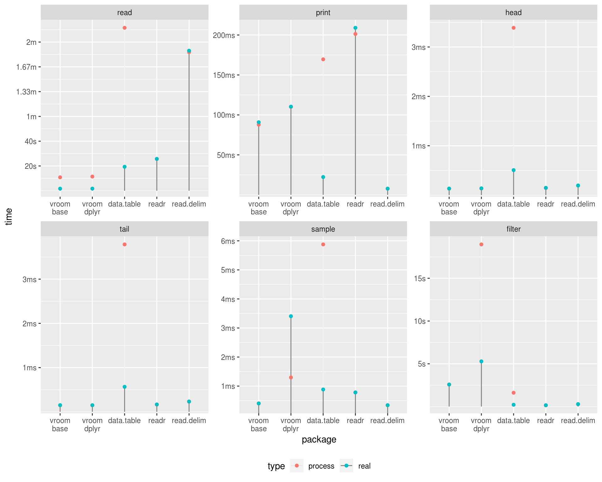

vroom is an experiment for a future version of readr (2.0), or a possible extension package.
It stems from the observation that IO is not the bottle neck in parsing delimited datasets, rather (re)-allocating memory and parsing the values into R data types (particularly for characters) takes the bulk of the time.
It relies on the Altrep framework available in R 3.5 to provide lazy / delayed parsing of values in delimited files.
The initial reading of the file simply records the locations of each individual record, the actual values are not read into R. Altrep vectors are created for each column in the data which hold a pointer to the index and the memory mapped file. When these vectors are indexed the value is read from the memory mapping.
This means initial reading is extremely fast, in the example below it is ~ 1/4 the time of the multi-threaded data.table::fread(). Sampling operations are likewise extremely fast, as only the data actually included in the sample is read. This means things like the tibble print method, calling head(), tail() x[sample(), ] etc. have very low overhead.
Filtering also can be fast, only the columns included in the filter itself have to be fully read across the entire dataset, only the filtered rows need to be read from the remaining columns.
(N.B. currently the dplyr implementation materializes the all numeric vectors when using filter() or sample_n(), so these cases are not as fast as they could otherwise be).
This approach also allows you to work with data that is larger than memory. As long as you are careful to avoid materializing the entire dataset at once it can be efficiently queried and subset.
Once a particular vector is fully materialized the speed for all subsequent operations should be identical to a normal R vector.
There is also lots of possible speed improvements available. The indexer could be highly parallelized, as it does not rely on R data structures at all. The index could also be stored on disk, which would make re-reading the file at a later time basically instantaneous. Materializing non-character vectors could also be parallelized.
The dataset used in these benchmarks is from FOIA/FOILed Taxi Trip Data from the NYC Taxi and Limousine Commission 2013, originally posted at http://chriswhong.com/open-data/foil_nyc_taxi/. It is also hosted on archive.org.
The first table trip_fare_1.csv was converted to tsv and saved as trip_fare_1.tsv, It is 1.55G in size.
#> Observations: 14,776,615
#> Variables: 11
#> $ medallion <chr> "89D227B655E5C82AECF13C3F540D4CF4", "0BD7C8F5B...
#> $ hack_license <chr> "BA96DE419E711691B9445D6A6307C170", "9FD8F69F0...
#> $ vendor_id <chr> "CMT", "CMT", "CMT", "CMT", "CMT", "CMT", "CMT...
#> $ pickup_datetime <chr> "2013-01-01 15:11:48", "2013-01-06 00:18:35", ...
#> $ payment_type <chr> "CSH", "CSH", "CSH", "CSH", "CSH", "CSH", "CSH...
#> $ fare_amount <dbl> 6.5, 6.0, 5.5, 5.0, 9.5, 9.5, 6.0, 34.0, 5.5, ...
#> $ surcharge <dbl> 0.0, 0.5, 1.0, 0.5, 0.5, 0.0, 0.0, 0.0, 1.0, 0...
#> $ mta_tax <dbl> 0.5, 0.5, 0.5, 0.5, 0.5, 0.5, 0.5, 0.5, 0.5, 0...
#> $ tip_amount <int> 0, 0, 0, 0, 0, 0, 0, 0, 0, 0, 0, 0, 0, 0, 0, 0...
#> $ tolls_amount <dbl> 0.0, 0.0, 0.0, 0.0, 0.0, 0.0, 0.0, 4.8, 0.0, 0...
#> $ total_amount <dbl> 7.0, 7.0, 7.0, 6.0, 10.5, 10.0, 6.5, 39.3, 7.0...The code used to run the benchmarks is in bench/benchmark.R.
The benchmark base uses vroom with base functions for subsetting. dplyr uses vroom to read the file and dplyr functions to subset. data.table uses fread() to read the file and data.table functions to subset and readr uses readr to read the file and dplyr to subset.
The following operations are performed.
print() - N.B. read.delim uses print(head(x, 25)) because printing the whole dataset takes > 10 minutes
head()tail()| package | Time to read file | Total time for all operations (sec) |
|---|---|---|
| vroom_base | 2.6s | 5.3s |
| vroom_dplyr | 2.6s | 12.4s |
| data.table | 19.7s | 19.9s |
| readr | 25.8s | 26.2s |
| read.delim | 1m 51.1s | 1m 51.4s |
Graph of timings, note because vroom and data.table operations use multiple cores the processor time is often much higher than the real time.
library(ggplot2)
library(forcats)
tm_df %>%
mutate(package = fct_inorder(sub("_", "\n", package))) %>%
ggplot() +
geom_segment(y = 0, aes(x = package, xend = package, yend = time, alpha = type), color = "grey50") +
geom_point(aes(x = package, y = time, color = type)) +
facet_wrap(vars(op), scales = "free") +
bench::scale_y_bench_time(base = NULL) +
theme(legend.position = "bottom")
sessioninfo::package_info(c("vroom", "readr", "dplyr", "data.table"), dependencies = FALSE)
#> ! package * version date lib source
#> R data.table <NA> <NA> [?] <NA>
#> dplyr * 0.7.8 2018-11-10 [1] CRAN (R 3.5.1)
#> readr 1.3.1 2018-12-21 [1] CRAN (R 3.5.1)
#> vroom 0.0.0.9000 2018-12-28 [1] local
#>
#> [1] /home/travis/R/Library
#> [2] /usr/local/lib/R/site-library
#> [3] /home/travis/R-bin/lib/R/library
#>
#> R ── Package was removed from disk.